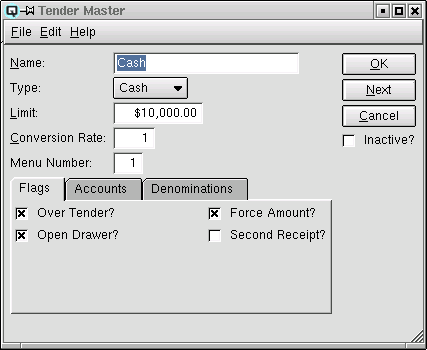
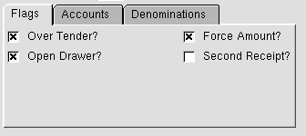
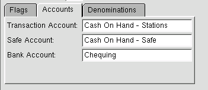
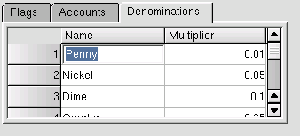

Tender Master

The tender master window is used to define tenders that will be used
in a customer invoice and at a Quasar point of sale terminal.
Name
The name of the tender.
Type
There are three types of accounts to select from.
-
- select "Cash" for cash tenders
- select "Cheque" for cheque tenders
- "Card" is currently not available, select "Cash" for card type tenders
Limit
The customers credit limit. Quasar point-of-sale will not allow a customer to
charge over their credit limit without a credit override.
Convert Rate
The conversion rate required to convert foreign exchange to the
base currency.
Menu Number
Defines the positioning on the Quasar Point-of-Sale menu.
Flags

This section is used to set flags for Quasar Point-of-Sale.
-
- Over Tender - Toggle on or off. Toggle on to allow an over
tender. Toggle off not to allow the tender to be over tendered. For
example, at the point of sale, if you do not allow a personal cheque
to be greater than the amount of the purchase you would set the over
tender flag to off.
- Open Drawer - Toggle on or off. Toggle on if the cash
drawer will open when a transaction is tendered using this
tender. Toggle off if the cash drawer will not open.
- Force Amount - Toggle on or off. Toggle on to force the
cashier to always enter the amount being tendered. Toggle off if the
cashier is not forced to enter the amount being tendered.
- Second Receipt - Toggle on or off. Toggle on if a second
receipt is required. For example, many organizations wish to print a
second receipt for charge type transactions.
Accounts

This section is used to define ledger accounts linked to the tender.
-
- Transaction Account - The ledger account into which
debits and credits from transactions will be
posted.
- Safe Account - During the cash reconcile process tenders are
transferred from the station to the safe. Enter the ledger account for
the safe.
- Bank Account - During the cash reconcile process tenders
are transferred to the bank. Enter the ledger account for the bank the
that the tender will be deposited to.
Denominations

Denominations are used to count cash at the point-of-sale during
the cash reconciliation process. A tender may have multiple
denominations. For example, Canadian cash has pennies, nickles, dimes,
quarters, loonies, toonies, etc.... The denominations defined are sent
to the point-of-sale and create a matrix for counting. For example,
you would count 7 dimes and Quasar would calculate that this equals 70
cents or .70 of a dollar.
-
- Name - The name of the denomination. For example, Pennies,
Nickles, Dimes and Quarters.
- Multiplier - Defines the value of the denomination. For
example a Canadian Quarter = .25 of one dollar.
Inactive?
Toggle on or off. Toggle on to set the tender to inactive. Toggle
off to re-set the tender to active.